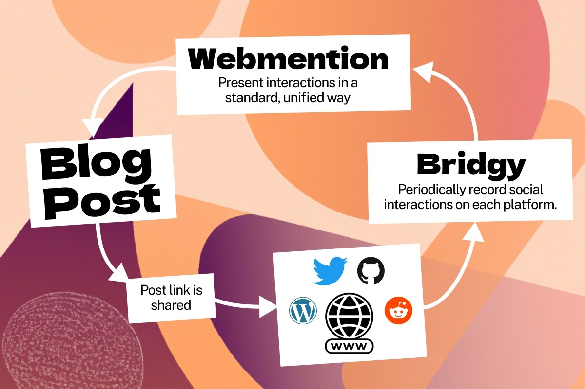

Add Comments on Framer Sites
Penned on December 30, 2022.
Comments are a great way to discuss, improve and get feedback on your online writing. Though I believe that they should be free flowing and platform-independent. Anyone wanting to participate shouldn't need to sign up for a random account before they can.
If you write on the web, you could make a commenting system in many ways: using a hosted service like Disqus or Facebook, repurpose Github issues or build an entirely custom solution. I was never fond of any of these approaches as they invariably involve a sign-up process before anyone's able to participate.
Enter Webmention — an open web standard for conversations and interactions across the web. It consolidates comments, likes, reposts and some other "social tokens" across platforms and provides developers a way to read and display them. It's a fairly new W3C proposal drafted by the IndieWeb community, but I'm excited to see it mature.

Today, discussions for topics that I care about happen primarily on Twitter. So I thought it would be a really cool idea to write a Webmention component for Framer and bring some of those discussions here.
I've had a blast building websites on Framer lately — the tool's gotten unbelievably good in the past few months. Having an easy to setup commenting system will hopefully bring even more people onto the platform.
While it still needs some polishing, my core idea already works. Share this article in a tweet and (assuming I didn't break anything) it should reflect at the bottom of this page in ~30-45min.
Give it a shot, and let me know what you think ;)
— Sid